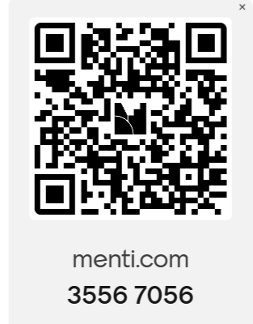

Session 3
On this page
Use these links to jump to the section that is most useful for you.
Session 3 itinerary
-
Discussion, demonstrations & activities
AI, information and community good.
-
Break
A small break after the main talk
-
Mini challenge - preparing final materials
In these session in your groups, you will start to finalise your mini challenge solution recipes ready for submission in the next week (week 4)
-
Personal project
In this session you will start connecting different pieces of your personal project to get a view of what it might look like, this might be a completed plan, a first view, or test version that you can refine in the next week.
Summary
This session looks at how AI can be used to support community ideas, local projects and practical problem-solving. We will explore how to compare AI responses with trusted sources, how to think about community needs, and how to decide whether a digital or AI-supported approach is useful.
We will also cover some topics to continue from week 1 & 2, and think more about how to evaluate information, and how to use AI in different ways for different tasks
Recap of Session 1
In Session 3, we went through answering a few questions raised in the class around ethics, data and responsible AI. The discussion session incorporated different perspectives on land use for data centres, the concerns people have around civil liberties, use of personal data and what this means for society. We took a look at the infrastructure required to maintain generative AI services, with a view of servers, supercomputers, large scale buildings to house hardware, and how innovations in cooling systems are slowly developing to develop beyond fresh water use.
The main talk reiterated what AI looks like in practice with a distinction between general public access/use compared to educational institutions, businesses and domain experts. We discussed how interaction with generative AI looks different from standalone tools, to tools with AI integrations, and what this means for leveraging large language model capabilities. Further, we note competing models outside of the core proprietary models that are most well known, and how experts might work with developing bespoke use cases, as well as the use of agents. We looked at examples of code for programming in two examples, one for simple tasks and functions i.e. sending a request to the MET Museum for digital archive access, and receiving outputs compared to code which used publicly available data for machine learning based 'training' (logistic regression) to then perform a simple prediction task. These examples were presented to make clear what the difference is between programming and machine learning.
The session included demonstrations with a number of tools live on screen, namely, Perplexity AI, Canva with AI integration, Google (Nano Bnana 2), and a view of Descript, Lovable, Replit and Claude AI (Anthropic).
Finally, the last part of the session included development of min-challenge solution design and personal project development.
Main ideas from the session
- AI is a broad term covering different methods and systems, prior to the emergence of generative AI, most of these methods which fall under AI were referred to distinctly based on the task and use case, for example statistics based machine learning models, or smaller scale machine learning models.
- The terms and conditions of use for services can include important factors around personal data.
- Not all of the methods under the umbrella field of AI require super computers, or large data centres.
- Machine learning tasks require a person to be able to code or programme a computer but programming a computer does not require machine learning, it is a way to instruct computers to perform different tasks and functions from simple arithmetic, analyses of data, to setting up filing systems.
- A prompt is the instruction, question, or request given to an AI tool.
Activities started in this session
Each team collated and synethesised their main solutions for the mini-challenges. We discussed some ways to improve the base solutions and include wider considerations around end user experience.
We also discussed personal project ideas and where those could be applicable for community and social good.
Join the live survey
Option 1: Visit menti.com here and select your responses.
Option 2: Alternatively use the QR code to share your thoughts.

Key vocabulary from this session
Click a card to reveal a short definition. These words will help with designing practical ideas for community good.
Community Need
Click to reveal definition.
Community Need
A real problem, gap, or opportunity that matters to a group, place, project, or community.
Audience
Click to reveal definition.
Audience
The people who will use, read, watch, or benefit from what you are making.
Accessibility
Click to reveal definition.
Accessibility
“Accessible” means a person with a disability is afforded the opportunity to acquire the same information, engage in the same interactions, and enjoy the same services as a person without a disability in an equally effective and equally integrated manner, with substantially equivalent ease of use. The person with a disability must be able to obtain the information as fully, equally and independently as a person without a disability.
Source: Resolution agreements between the US Office of Civil Rights and the University of Cincinnati, Youngstown State University, and South Carolina Technical College System University Of Virginia
Workflow
Click to reveal definition.
Workflow
A clear sequence of steps that shows how a task moves from start to finish. In our daily activities we might have workflows for some tasks we do, it means that we might carry out certain steps in a particular order. For example, a workflow for potting a plant might include starting with getting the materials, pots, plans, soil, and a location, then assessing if the plant is ready to pot or needs time to grow from a seedling phase, and so forth. The workflow for planting will have decision steps, like whether the season is suitable for the plant to go outside or not, or if it needs time away from direct light etc. If you are very experienced, you will have clear workflows, you might share these with others or note down instructions. In general for any project, work, or hobby we might use workflows to help guide a process.
Source: Class tutor.
Prototype
Click to reveal definition.
Prototype
A first version or rough version of an idea, made so it can be tested, discussed, and improved over time. Example: if you were making a stool for your home, you might start with a small initial test version which chopsticks, or drawn version, continue which you might use to keep working out the details till you have a version ready before the build step, this would be your prototype of the stool.
Source: Class tutor.
Human Review
Click to reveal definition.
Human Review
A person checking work before it is used, published, sent, or shared. In the context of AI assisted work, a human review can be added at multiple places along the the way, during the main idea, assessing what the AI will be used for, what is prompted, the outputs from the tool and then checks before sharing.
Source: Class tutor.